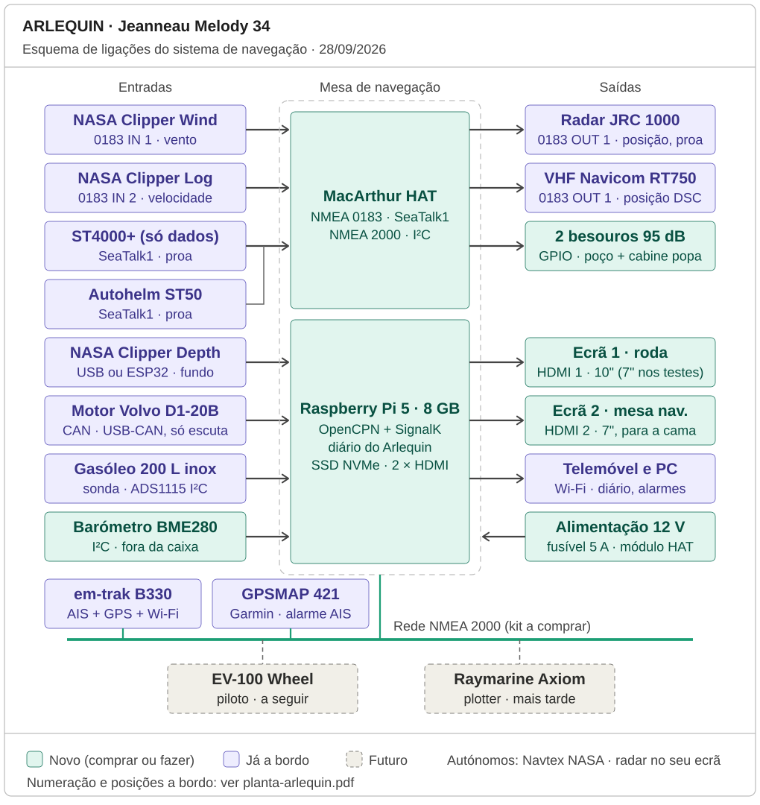
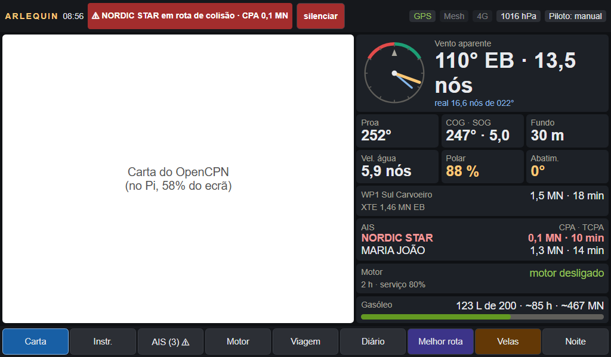
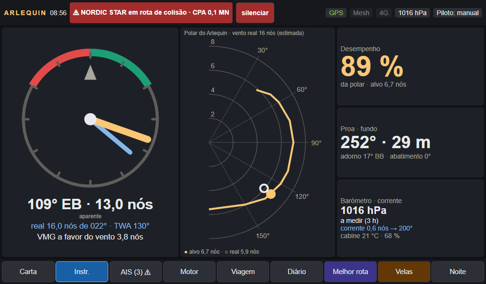
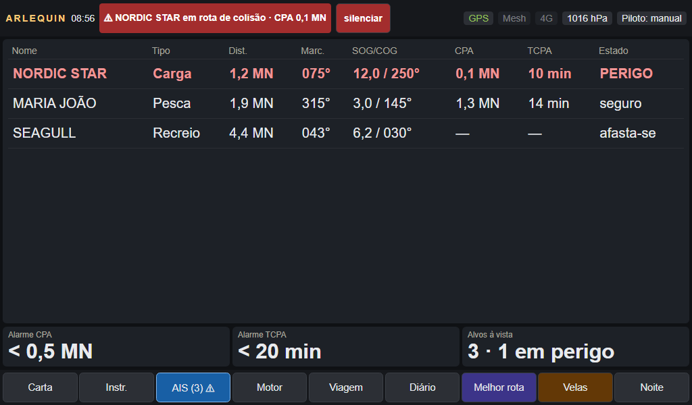
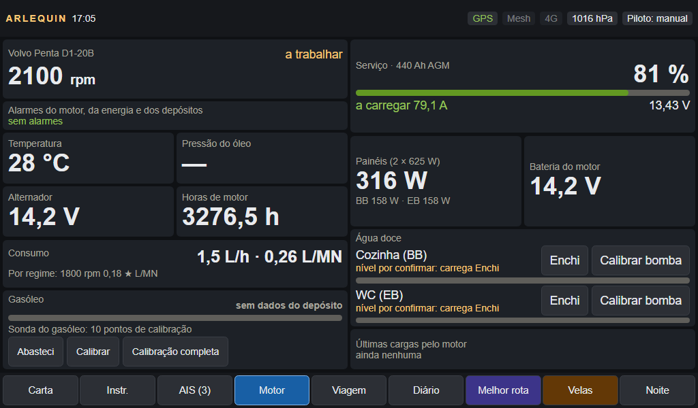
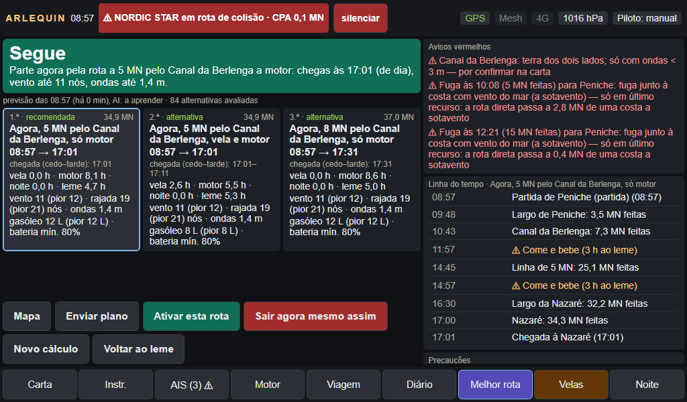
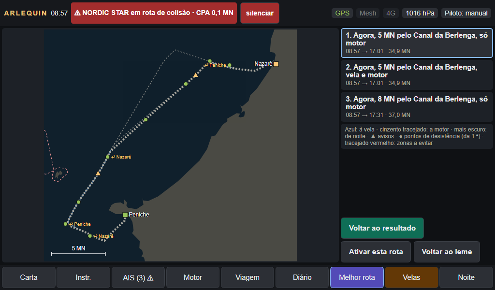
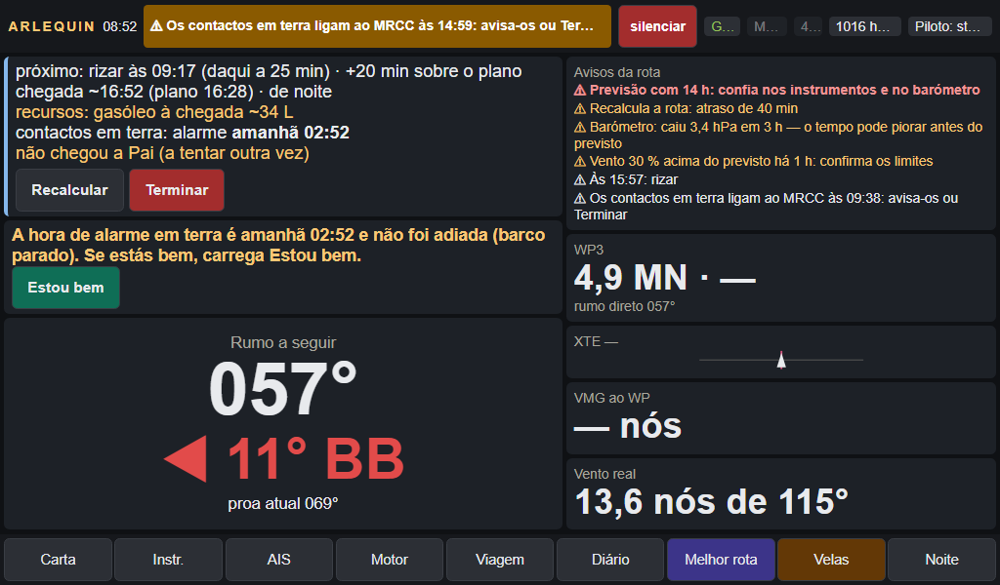
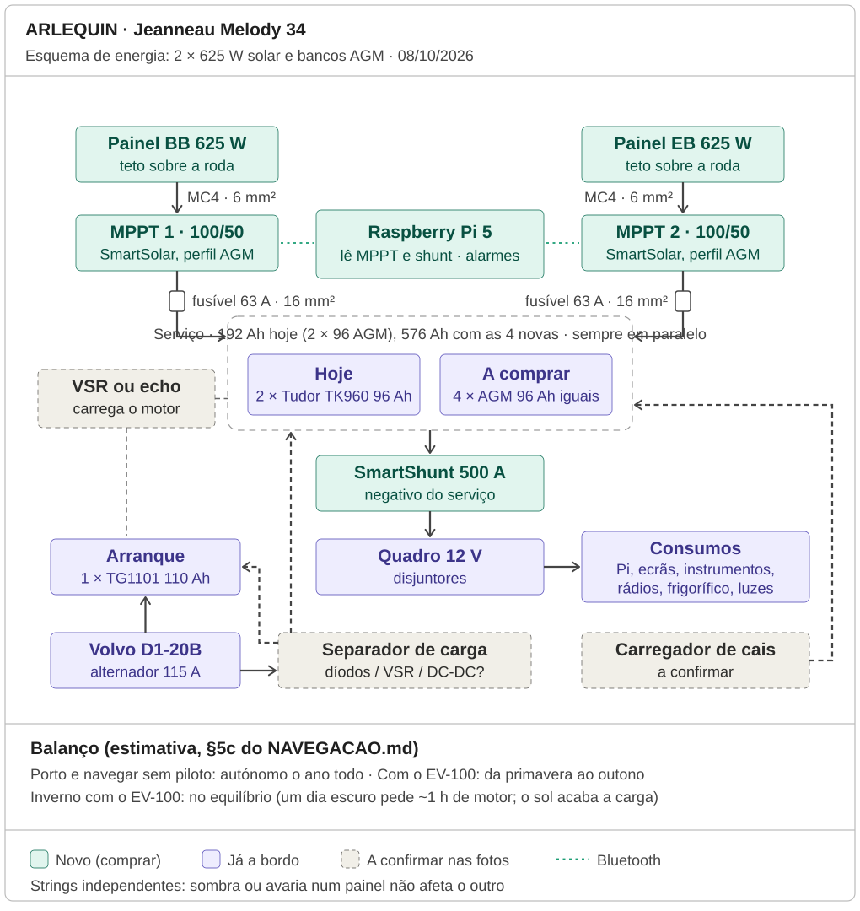

Documento técnico de apresentação · 6 de outubro de 2026 · estado: software completo e testado no portátil, instalação a bordo a seguir
Sem custos neste documento: só o material, marcado como já a bordo ou a instalar.
1. Em resumo: o que é e o que não é
ARLEQUIN · apresentação técnica · 06/10/2026
Em palavras simples: um computador pequeno, no barco, junta tudo o que os instrumentos dizem num só ecrã na roda, vigia o barco quando o Ivo dorme ou está em terra, e ajuda a decidir quando sair e por onde, sem nunca decidir por ele.
Ver tudo num ecrãVento, proa, velocidade, fundo, AIS, motor, gasóleo, água e energia, ao lado da carta oficial do Instituto Hidrográfico, num ecrã tátil na roda de leme. Um segundo ecrã na mesa de navegação, visível da cama.
Vigiar e avisarColisão AIS, fumo, água no porão, fuga de gasóleo, bateria, motor, intrusão, barco a garrar. Apito a bordo e mensagens Telegram em terra, com uma fila que insiste até entregar.
Decidir melhorA melhor rota: 3 alternativas com veredicto, hora de chegada em 3 cenários, pontos de desistência, plano enviado a quem fica em terra, acompanhamento a navegar. Uma AI que aprende o barco com os dados reais.
O que o sistema faz
Lê 9 aparelhos já a bordo e 12 sensores novos, em 7 protocolos diferentes, e põe tudo numa só árvore de dados (SignalK).
Mostra 8 páginas no ecrã da roda, de dia e de noite, com letra mínima de 14 px e alvos de toque de 44 px (mãos molhadas, luvas).
Calcula a melhor rota entre 15 portos da costa continental com a previsão Open-Meteo, a polar do barco e as correções da AI.
Envia o plano de navegação a contactos em terra com uma hora de alarme: se o barco não chegar, eles ligam ao MRCC Lisboa.
Grava tudo numa caixa negra desde o primeiro dia e treina os modelos da AI a bordo, sozinho, depois de cada saída.
O que o sistema não faz (de propósito)
Não governa o barco. O piloto automático decidido (Raymarine EV-100 de roda) ainda está por instalar; até lá o cálculo da rota conta sempre com o Ivo ao leme.
Não liga o motor nem mete mudanças. O Pi só escuta a rede do motor (CAN em modo de escuta): nunca escreve nela.
Não muda a rota sozinho. Avisa, propõe "Recalcular", e espera por um toque.
Não substitui a eletrónica de segurança. O detetor de fumo, a bomba de porão, o VHF, o AIS e o Navtex continuam a funcionar sem o Pi.
É uma ajuda à decisão. A previsão pode falhar; a decisão de sair é sempre do skipper. Está escrito no ecrã e nos documentos.
2. O barco e o problema de navegar a solo
ARLEQUIN · apresentação técnica · 06/10/2026
Em palavras simples: a solo, uma pessoa faz tudo ao mesmo tempo: governar, vigiar, decidir, dormir. O sistema foi desenhado para fazer a parte da vigilância e preparar a parte da decisão.
Arlequin · Jeanneau Melody 34
Projeto e série
André Mauric e Gilles Vaton · Jeanneau, 1974–1982, 607 unidades (ano do casco por confirmar nos papéis)
Dimensões
10,55 m fora a fora · 10,25 m de casco · 8,70 m na flutuação · boca 3,38 m · calado 1,90 m
Deslocamento
~6 t leve (2 900 kg de lastro em ferro fundido) · ~7,2 t carregado (estimativa)
Mastreação
Sloop de topo, mastro pousado no convés de 14,20 m · I = 14,17 m · P = 12,92 m · J = 4,51 m · E = 3,63 m
Governo
Roda de leme com travão · leme semi-suspenso num patilhão · cana de inox de emergência
Motor
Volvo Penta D1-20B (diesel mecânico com caixa MDI que fala J1939) · depósito de gasóleo de 200 L em inox
Água e energia
2 depósitos flexíveis de água doce · 3 bancos de baterias de 2 × 110 Ah (1 motor, 2 serviço = 440 Ah)
Base
Peniche · navegação costeira na costa continental, sobretudo a solo
O que já existia a bordo
AIS transponder classe B com GPS (em-trak B330), anemómetro, log e sonda NASA Clipper, radar JRC 1000, plotter Garmin GPSMAP 421, VHF Navicom RT750 com DSC, Navtex NASA, bússolas Autohelm ST50 e Raytheon ST4000+ (o piloto antigo sem a unidade de roda: só dá a proa). Cada um fala a sua língua e nenhum falava com os outros.
Os quatro problemas que o sistema ataca
Problema
Resposta do sistema
Instrumentos espalhados, cada um com o seu ecrã e protocolo
Um só ecrã tátil na roda com tudo por cima da carta; um segundo na mesa de navegação
A solo não se vigia o AIS, o motor e a bateria enquanto se dorme
Alarmes com apito, regras de colisão com histerese, besouros e Telegram
O barco fica semanas sozinho em Peniche, com o Ivo em Lisboa
Vigilância no porto: fumo, porão, gasóleo, intrusão, deriva; comandos por Telegram pelo router 4G
Decidir quando sair e por onde é a decisão mais difícil a solo
Melhor rota com limites de segurança, plano para terra com hora de alarme e acompanhamento a navegar
Regras de desenho que nunca se quebram
Reserva obrigatória: o plotter, o VHF, o AIS e o Navtex funcionam sem o Pi; a Navionics no telemóvel tem GPS e cartas próprias.
Nada de credenciais no código: tokens e contas são só do Ivo; um teste falha se um token verdadeiro entrar no repositório.
O erro fica do lado do alarme: um dado desconhecido nunca conta como "calmo" nem como "seguro".
Tudo testado antes de ir para o barco (secção 18).
3. Arquitetura: o que liga a quê
ARLEQUIN · apresentação técnica · 06/10/2026
Em palavras simples: uma placa de interfaces traduz todas as línguas dos instrumentos; um Raspberry Pi junta tudo, desenha a carta e o painel, e dois ecrãs mostram o resultado.

Esquema de ligações (28/09/2026). Verde: novo; lilás: já a bordo; tracejado: futuro (o EV-100 de roda fica decidido, por instalar). O radar e o Navtex ficam autónomos.
O cérebro
Computador
Raspberry Pi 5, 8 GB, SSD NVMe de 256 GB por baixo (base Pimoroni), dissipador ativo, alimentado a 12 V pelo módulo da HAT com fusível de 5 A
Interfaces
MacArthur HAT (OpenMarine): NMEA 2000, 2 entradas e 2 saídas NMEA 0183, SeaTalk1 (só entrada), I²C, módulo 12→5 V
Sistema
OpenPlotter (Raspberry Pi OS) · SignalK 2.33 · Node 22 · OpenCPN com cartas oeSENC "Portugal" do IH (o-charts) · Chromium em modo quiosque
Rede do motor
Adaptador USB–CAN isolado (gs_usb, SocketCAN) na cablagem do MDI, a 250 kbit/s e só a escutar. Nunca na NMEA 2000
Fora do barco
Router 4G (Telegram, previsões); Tailscale para copiar os dados para o portátil; Wi-Fi para o telemóvel (Navionics, diário)
Os ecrãs
Ecrã 1, na roda: 7" HDMI tátil (1024×600) na fase de testes; 10" SailProof de 1 500 nits e IP65 na fase definitiva. Suporte e pala impressos em ASA, a pala fecha como tampa.
Ecrã 2, na mesa de navegação: o 7", virado para a porta da cabine de popa: vê-se da cama.
Porque não um plotter comercial: nenhum lê SeaTalk1, NMEA 0183 a 4 800 baud, J1939 e sensores I²C ao mesmo tempo, nem deixa escrever as regras de alarme e a melhor rota do próprio barco. O Pi faz de ponte para um Axiom no futuro.
4. Protocolos e fluxo de dados
ARLEQUIN · apresentação técnica · 06/10/2026
Em palavras simples: os dados entram por sete caminhos diferentes, ficam todos com o mesmo nome e o mesmo formato, e a partir daí qualquer parte do sistema os pode usar.
FontesAIS + GPS · vento · log · sonda · bússolas · motor · gasóleo · água · barómetro · inclinação · baterias e solar · sensores do porto
→
EntradasMacArthur HAT (N2K, 0183, SeaTalk1, I²C) · USB–CAN · ESP32 por Wi-Fi · Bluetooth (Victron) · GPIO
→
SignalKUma árvore de dados com nomes normalizados (ex.: navigation.position, propulsion.main.revolutions, tanks.fuel.0.currentLevel) e notificações com níveis
→
SaídasEcrã da roda e da mesa · OpenCPN · alarmes e apito · Telegram em terra · caixa negra · AI · NMEA 0183 para o radar, o VHF e o telemóvel
Protocolo
Quem o usa a bordo
Como entra ou sai do Pi
NMEA 0183 (4 800 baud)
Anemómetro e log NASA (MWV, VHW/VLW); radar JRC e VHF (recebem posição e proa)
2 entradas e 2 saídas RS-422 da MacArthur; a sonda pela 3.ª entrada (adaptador USB–0183 ou ESP32)
Porta N2K da MacArthur numa mini-rede com 2 terminadores e alimentação própria a 12 V
SeaTalk1
ST4000+ (painel e bússola fluxgate) e ST50 Compass
Entrada SeaTalk1 da MacArthur (só leitura): proa magnética
J1939 sobre CAN (250 kbit/s)
Caixa MDI do Volvo D1-20B: rotações, horas, temperatura da água, tensão, caudal quando o motor o mede, alarmes do MDI (PGN 65417)
USB–CAN isolado junto ao motor, listen-only; derivação soldada de ≤ 50 cm; interface can1 fixa no arranque
I²C e 1-Wire
ADS1115 (sonda do gasóleo), BME280 (barómetro), ICM-20948 (inclinação), DS18B20 (frigorífico)
Conector I²C/Qwiic da MacArthur e GPIO do Pi; a app I2C do OpenPlotter publica as tensões
Bluetooth
Victron SmartShunt e 2 MPPT SmartSolar
Plugin signalk-victron-ble com IDs fixos (servico, motor, mppt1, mppt2)
Wi-Fi e contactos secos
ESP32 com SensESP (pedaladas das bombas de água, sensores do porto); câmara opcional
Por Wi-Fi para o SignalK, ou diretamente no GPIO do Pi; os sensores do porto são 0/1
HTTP/HTTPS e Telegram
Open-Meteo (previsão e mar, célula de mar, 48 h); bot Telegram; healthchecks opcional
Router 4G; sem rede o sistema continua com a última previsão arquivada e põe as mensagens em fila
Dois cuidados elétricos escritos no desenho: as saídas 0183 e a N2K da MacArthur não são isoladas (o Pi e os instrumentos partilham o mesmo negativo no quadro) e a rede do motor nunca se mistura com a NMEA 2000.
5. Sensores e fontes de dados (I): o que já está a bordo
ARLEQUIN · apresentação técnica · 06/10/2026
Em palavras simples: quase toda a eletrónica que o barco já tinha passa a alimentar o sistema; só se compra o que faltava medir.
Aparelho
O que mede
Como liga
O que o sistema faz com isso
Estado
em-trak B330 (AIS classe B, transponder)
Alvos AIS (posição, rumo, velocidade, nome) e a nossa posição GPS
NMEA 2000 (também 0183 a 38 400, USB e Wi-Fi)
Lista de alvos por perigo com CPA/TCPA; alarme de colisão no ecrã e no servidor; posição para tudo o resto; "em porto"
já a bordo
NASA Clipper Wind
Vento aparente (ângulo e velocidade)
NMEA 0183 IN 1 (V2 envia MWV; a Mk1 precisa do cabo NMEA da NASA)
Vento real com a proa, VMG, % da polar, laylines; a AI compara com a previsão
já a bordo
NASA Clipper Log
Velocidade e distância na água
NMEA 0183 IN 2 (VHW/VLW), ou I²C pelo ESP32 se for a versão antiga
Corrente e abatimento (com o GPS), desempenho contra a polar, horas ao leme
já a bordo
NASA Clipper Depth
Profundidade
3.ª entrada 0183 (adaptador USB) ou I²C pelo ESP32
Fundo e tendência no ecrã; alarme de pouca água é uma melhoria por decidir
já a bordo
Raytheon ST4000+ (painel e fluxgate) e Autohelm ST50
Proa magnética (duas fontes)
SeaTalk1 IN
Proa verdadeira com a declinação; vento real; rumo a seguir no Leme; a caixa negra só marca linhas estáveis com proa
já a bordo
Garmin GPSMAP 421
GPS de reserva, plotter
NMEA 0183 ou NMEA 2000
Segundo ecrã de carta e GPS de reserva se o B330 falhar
já a bordo
Volvo Penta D1-20B (caixa MDI)
Rotações, horas, temperatura da água, tensão do alternador, caudal (se o motor o der), alarmes do MDI
J1939 em CAN, pelo adaptador USB–CAN a instalar
Página Motor, consumo estimado pela curva da Volvo (calibrável), sobreaquecimento ≥ 95 °C, alternador sem carga, estado da ligação (a receber / calado / sem ligação)
motor já a bordo
Sonda do gasóleo (boia com resistência, no depósito de 200 L)
Nível de gasóleo
Em paralelo com o medidor do painel, pelo ADS1115 a instalar
Litros, autonomia em horas e milhas, reserva ≤ 40 L, fuga (> 5 L em 12 h parado), consumo anormal, calibração por pontos no ecrã
sonda já a bordo
Baterias AGM (serviço 2 × 96 Ah, a crescer para 6; arranque 110 Ah) e alternador 115 A
Tensão, corrente e estado de carga (pelo SmartShunt)
Bluetooth (Victron) a instalar
Avisos 55 % / 85 %, alarme < 50 %, bateria do motor < 12,2 V, cargas pelo motor no diário, planeamento da rota (192 Ah hoje, 576 com as 4 baterias novas)
baterias já a bordo
Aparelhos que só recebem dados do sistema: o radar JRC 1000 (posição e proa pela saída 0183, fica autónomo no ecrã dele) e o VHF RT750 (posição para o DSC). Autónomo sem dados: o Navtex NASA. O radar e a sonda de pesca TotalScan ficaram de fora até o sistema estar validado.
6. Sensores e fontes de dados (II): o que se instala de novo
ARLEQUIN · apresentação técnica · 06/10/2026
Em palavras simples: doze sensores baratos e pequenos acrescentam o que ninguém media: a atmosfera, a inclinação, o gasóleo, a água, a energia, o fumo, o porão e quem entra no barco.
Sensor
O que mede
Como liga
O que o sistema faz com isso
Estado
Barómetro BME280 (DFRobot Gravity)
Pressão atmosférica, temperatura e humidade
I²C da MacArthur, montado fora da caixa do Pi
Tendência de 3 h no ecrã e no diário de hora a hora; aviso "queda > 3 hPa em 3 h: o tempo pode piorar antes do previsto" a navegar
a instalar
Inclinação ICM-20948 (9 eixos, Qwiic)
Adorno e caimento
I²C/Qwiic da MacArthur, rígido e alinhado com o eixo do barco
Abatimento (K × adorno / velocidade², K calibrado no Arlequin); adorno na página Instrumentos
a instalar
ADS1115 (conversor analógico–digital)
Tensão da sonda do gasóleo e da alimentação do medidor
I²C, dois divisores 47 kΩ / 10 kΩ; o medidor do painel continua a funcionar
Nível pela tabela de calibração (pontos no ecrã; mais pontos perto do vazio); sonda perdida ao fim de 5 min sem leitura
a instalar
3 reed switches + ímanes (pedais das bombas de água doce)
Pedaladas de cada bomba de pé (cozinha e WC)
ESP32 com SensESP por Wi-Fi, ou GPIO do Pi; contador acumulado de 10 em 10 min
Litros gastos por depósito (bomba calibrada com uma jarra de 1 L), "Enchi", aviso a 20 %, dias que faltam ao ritmo dos últimos dias
a instalar
Victron SmartShunt 500 A + 2 MPPT SmartSolar 100/50
Corrente, tensão e carga do serviço; produção de cada painel; bateria do motor pela entrada auxiliar
Bluetooth (plugin signalk-victron-ble)
Página Motor (serviço, painéis BB/EB, bateria do motor), alarmes de energia, balanço no planeamento da rota
a instalar
Detetor de fumo com saída de relé
Fumo a bordo
Contacto 0/1 (ESP32 ou GPIO), caminho sensors.fumo
Emergência: apito contínuo; reconhecido, bip de 2 em 2 min enquanto houver fumo; Telegram com fotografia se houver câmara
A foto vai com a intrusão e o /foto; o EV-1 passa a proa principal quando o piloto estiver montado (o ST4000+ fica de reserva)
opcional / com o piloto
Regra comum: cada sensor tem uma cadência mínima e, se se cala, o sistema diz-o ("sonda perdida", "sem sensor", "sem leitura do motor") em vez de mostrar o último valor como se fosse atual.
7. O software: dez plugins próprios no SignalK
ARLEQUIN · apresentação técnica · 06/10/2026
Em palavras simples: cada função é um programa pequeno e independente, com os seus testes; se um falhar, os outros continuam, e o SignalK e o OpenCPN nunca dependem deles.
Plugin
O que faz
Testes
arlequin-ecra
O ecrã da roda (8 páginas + Noite), em HTML/JS sem dependências; arruma as janelas do OpenCPN e leva o Diário ao signalk-logbook com um token guardado só no servidor. Um verificador desenha os 74 estados num Chromium a 1024×600 e falha se algo ficar cortado.
325
signalk-arlequin-rota
A melhor rota: o cálculo (3a), o plano para terra pelo Telegram (3b-1) e o acompanhamento a navegar (3b-2), de minuto a minuto, com o plano gravado em disco (sobrevive a reinícios) e o ponto seguinte da rota ativa a avançar sozinho (06/10).
475
signalk-arlequin-porto
Barco parado e Telegram: fumo, porão, bomba, fuga, intrusão, deriva do ponto de amarração; comandos /estado, /foto, /posicao, /armar, /desarmar, /amarrar, /largar; fila persistente que insiste até entregar.
144
signalk-arlequin-ais
Alarme de colisão no servidor (o mesmo cálculo CPA/TCPA do ecrã), com as regras de parado, amarrado e em porto.
49
signalk-arlequin-j1939
O motor pelo J1939 do MDI: descodifica as PGN, estima o consumo, publica o estado da ligação, descobre os bits dos alarmes do MDI numa página própria.
62
signalk-arlequin-gasoleo
Gasóleo pela sonda original: calibração por pontos, reserva, fuga, consumo anormal, abastecimentos, nível pelo consumo quando a sonda falha.
60
signalk-arlequin-agua
Água doce pelas pedaladas das bombas de pé: Enchi, calibrar a bomba, aviso a 20 %, dias que faltam.
23
signalk-arlequin-energia
Alarmes das baterias AGM (55 / 85 / 50 %, bateria do motor) e as cargas pelo motor registadas no diário.
56
signalk-arlequin-caixanegra
Grava tudo desde o 1.º dia (bruto por hora, tabela de 10 em 10 s, saídas, previsões); gere o disco; fecha as saídas nos portos.
73
signalk-arlequin-ia + arlequin-ia (Python)
Arquivo das previsões, treino automático dos 4 modelos (LightGBM por quantis: velocidade à vela, força e direção do vento, consumo) depois de cada saída, as previsões em JavaScript para a rota, o cartão da AI no Diário, versões com "Voltar atrás". Páginas 15 e 16.
41 + 65
arlequin-simulador (só no portátil)
Finge o barco inteiro: navegação, vento, AIS, motor J1939, baterias, sol. Nunca vai para o Pi; o que injeta fica marcado como simulado e nunca ensina a AI.
27
Como está escrito
Node.js 22, CommonJS, sem frameworks; testes com o node:test; Python 3 com LightGBM, pandas e numpy em versões fixas.
Todos os textos em português de Portugal; horas sempre de Lisboa.
Cada rota HTTP dos plugins tem nível de acesso: leituras com sessão, escritas com conta "read/write"; o ecrã nunca é administrador.
Plugins da comunidade que se usam
signalk-logbook (diário em YAML por dia), signalk-derived-data (vento real, corrente, proa verdadeira, dia/noite), signalk-victron-ble, resources-provider e course-provider (rota ativa e rumo a seguir), set-system-time (hora pelo GPS).
8. O ecrã da roda
ARLEQUIN · apresentação técnica · 06/10/2026
Em palavras simples: oito páginas, um botão para cada, letras grandes, e um modo de noite que escurece tudo sem mudar as cores. As outras páginas: Viagem (próximo ponto, chegada, XTE, VMG, resumo), Diário (entradas do dia, 8 botões de um toque, notas, o cartão da AI), Melhor rota e Velas.

Carta: o OpenCPN ocupa 58 % do ecrã no Pi; ao lado, vento, proa, COG/SOG, fundo, velocidade, % da polar, próximo ponto, os 2 alvos AIS mais perigosos, motor e gasóleo. Na barra, o alarme de colisão com "silenciar".

Instrumentos: vento aparente e real, VMG, a polar com o alvo e o real, desempenho, proa e fundo, adorno e abatimento, barómetro com tendência, corrente, cabine.

AIS: todos os alvos por perigo com distância, marcação, SOG/COG, CPA e TCPA; tocar num alvo abre o detalhe com "Silenciar". Limites: CPA < 0,5 MN e TCPA < 20 min.

Motor: "a trabalhar" a 2 100 rpm, temperatura, óleo, alternador, horas, consumo (1,5 L/h · 0,26 L/MN); gasóleo (aqui ainda "sem dados do depósito") com Abasteci e Calibrar; água doce com Enchi; energia (serviço a carregar, painéis 2 × 625 W, bateria do motor, últimas cargas).
Capturas de 05/10/2026 do código final, com o simulador do portátil a fazer de barco (Peniche → Nazaré).
9. Alarmes: uma só regra para todos os plugins
ARLEQUIN · apresentação técnica · 06/10/2026
Em palavras simples: só o perigo imediato apita sem parar; o resto dá um bip e fica escrito; o que é grave segue também para o telemóvel.
Som
Alarmes
Contínuo (um bip por segundo até calar)
Colisão AIS · fumo · água no porão · bomba de porão (> 3 min seguidos ou 5.º arranque numa hora) · fuga de gasóleo (líquido debaixo do depósito, ou > 5 L em 12 h com o motor parado) · motor a sobreaquecer (≥ 95 °C)
Curto (um bip quando chega)
Serviço < 50 % · bateria do motor fraca · disco a 95 % · "o barco saiu do lugar" · intrusão · todos os avisos da rota · gasóleo na reserva (≤ 40 L) · consumo anormal · alternador sem carga · água a acabar (20 %) · sem leitura do motor · avisos de 55 % e 85 % da bateria
Sem som (só no ecrã)
Sonda do gasóleo perdida · SmartShunt calado · relógio da caixa negra · lembrete das velas · disco a 80 %
Regras finas
Calar: "silenciar" na barra; uma emergência só se "reconhece". Um alarme calado continua calado se o plugin reiniciar e o repuser em menos de 3 min com a mesma mensagem (menos as emergências).
Fumo reconhecido: o contínuo pára, fica vermelho e repete um bip curto de 2 em 2 min enquanto houver fumo; se passar e voltar, contínuo outra vez.
De noite, com o barco parado, os avisos de 55 % e 85 % ficam só no ecrã.
O som nasce no arranque: o Chromium do Pi arranca com o autoplay permitido; se o browser o suspender, a barra mostra "SEM SOM: toca no ecrã".
Colisão AIS: as regras que evitam falsos alarmes e falsos silêncios
Perigo = CPA < 0,5 MN e TCPA < 20 min; limpa só com 30 s seguidos sem perigo (histerese).
Parado é < 0,5 nó. Dois barcos parados nunca são colisão; um alvo que se mexe dá sempre alarme.
Sem velocidade (do alvo ou a nossa): tira-a do rasto de 30 s de posições; um navio a 12 nós de proa dá ~14 min de aviso em vez de 2.
Muito perto (< 0,05 MN, ~90 m): um alvo que vem para nós alarma mesmo abaixo de 0,5 nó (um barco a garrar), também amarrados.
Amarrado (nós abaixo de 0,5 nó durante 5 min): os alvos parados não apitam; bornear à âncora mais de 1 min a 0,6 nó tira-nos do "amarrado" (o erro fica do lado do alarme).
Em porto (< 0,5 MN do cais de um porto conhecido e < 4 nós): os alvos parados ficam a amarelo sem som. Custo aceite: um navio parado no caminho dentro do porto não apita.
Sem a nossa posição há 10 s, o vigia não julga e os alarmes ativos ficam.
Onde chegam
Ecrã da roda e da mesa (com o apito pelo HDMI ou por uma placa de som USB) · Telegram do Ivo com "✓ Resolvido" quando passam · besouros de 12 V por GPIO no poço e na cabine, a melhoria n.º 1 da lista por decidir.
10. Barco parado: vigilância e Telegram
ARLEQUIN · apresentação técnica · 06/10/2026
Em palavras simples: com o barco em Peniche e o Ivo em Lisboa, o telemóvel recebe o que se passa a bordo e pode armar o alarme, pedir uma fotografia ou a posição.
O que vigia
Fumo, água no porão, bomba de porão a trabalhar de mais, líquido debaixo do depósito de gasóleo.
Intrusão com o alarme armado: gaiuta aberta ou movimento, com fotografia se houver câmara.
"O barco saiu do lugar": mais de 30 m do ponto de amarração (limpa a 24 m).
Energia (pelo SmartShunt), disco da caixa negra, previsão velha a navegar.
O ponto de amarração (as regras que evitam enganos)
Grava-se sozinho com o barco parado 30 min, só junto a um porto ou fundeadouro conhecido (a menos de 1 km); no mar nunca. /amarrar grava-o onde se estiver.
Apaga-se sozinho só com o motor a trabalhar, mais de 1 nó e o alarme desarmado (largou de propósito).
Sem motor nunca se apaga sozinho: "Larguei (sou eu)" no ecrã ou /largar. Uma âncora a garrar nunca se dá por resolvida só porque o barco anda depressa.
Armado, nunca se apaga sozinho, nem a motor: é tratado como roubo.
Comandos (só dos chats autorizados)
/estado (baterias, solar, depósitos, cabine, alarmes) · /foto · /posicao · /armar · /desarmar · /amarrar · /largar · /ajuda. Desarmado e sem movimento há 12 h, o bot pergunta se quer armar.
Entregar mesmo com rede má
A fila fica em disco (encaminhador.json): um reinício não perde nada nem repete avisos.
O porto insiste até o Telegram aceitar, com recuo até 1 min, e a mensagem leva "(atrasado N min)"; os alarmes passam à frente das outras mensagens.
Distingue erros permanentes (bloqueou o bot) de transitórios (sem rede); uma mensagem recusada 3 vezes sai com aviso para o Ivo.
Um caminho que oscila segue no máximo de 10 em 10 min, sem se perder; a fila guarda 100 mensagens.
Mensagens com referência curta ("ref. A3"): quem recebe vê que é a mesma depois de um reinício a meio.
Quem fala com o barco
Lista
O que pode
Chats autorizados (o Ivo)
Tudo: comandos, alarmes, avisos da rota, "✓ Resolvido"
Contactos do plano (família, amigos)
Só recebem os planos de navegação e as mensagens de chegada e atraso; entram por /start + código que o Ivo confirma; as mensagens deles são ignoradas
O sistema só avisa: o detetor de fumo e a bomba de porão mantêm a sirene e o flutuador próprios. O router 4G é a via garantida; o Meshtastic (rádio LoRa) fica para depois de o sistema estar validado.
11. Melhor rota (I): o cálculo
ARLEQUIN · apresentação técnica · 06/10/2026
Em palavras simples: o sistema experimenta dezenas de maneiras de fazer a viagem, com a previsão do tempo em três versões, e mostra as três melhores com um veredicto claro.
Entradas
Previsão Open-Meteo (vento a 10 m, rajadas, ondas, período e direção; célula de mar; 48 h), um ficheiro por ponto da rota, arquivado para a AI.
A costa gerada dos polígonos de terra do OpenStreetMap: linhas a 3, 5 e 8 MN; 15 portos de Viana a Olhão com aproximações; zonas a evitar (separadores de tráfego, Cachopos); o Canal da Berlenga.
A polar do Arlequin (estimada, até a AI a substituir) e a curva de consumo da Volvo (2 100 rpm → 1,45 L/h).
A corrente de maré do Tejo (até 1,8 nó) na barra e no estuário; no resto da costa, a corrente da previsão.
O gasóleo e a bateria atuais (440 Ah, solar com fator 0,65), a tripulação ("só eu" ou "2 ou mais").
Método
Alternativas = afastamento (3, 5 ou 8 MN, rota direta, canal) × hora de partida (agora e as próximas) × vela ou só motor. Na captura ao lado: 84 alternativas avaliadas em menos de um minuto.
Cada alternativa é simulada em 3 cenários (pessimista, provável, otimista) sobre a previsão; os limites contam no pior dos três.
A linha de 3 MN só existe com vento de terra ao longo de toda a linha; o Canal da Berlenga só com ondas < 3 m nos 3 cenários.
Horas ao leme: a motor em calma (vento < 10 nós e ondas < 2 m, ou ondulação comprida até 3 m) contam metade, porque a roda tem travão.
Desconhecido nunca conta como calmo: previsão em falta exclui a alternativa (menos no "Sair agora", com aviso vermelho).

Resultado de Peniche para a Nazaré (05/10/2026): veredicto "Segue", 3 cartões com as horas dos 3 cenários, os avisos vermelhos (aqui, o canal por confirmar na carta e as fugas a sotavento), a linha do tempo com "come e bebe" e as precauções.
Limites de segurança (configuráveis)
Só eu
2 ou mais
Vento médio / rajada
22 / 30 nós
28 / 35 nós
Ondas
3 m
4 m
Horas equivalentes ao leme
8 h
—
Chegada de noite a porto desconhecido
não recomendado
—
Gasóleo / bateria à chegada
≥ 40 L e ≥ 50 % no pior caso; senão laranja "Não recomendado"
Veredictos: verde "Segue" · amarelo "Espera até às HH:MM" · laranja "Não recomendado" · vermelho "Volta ou abriga-te em X" (só no mar). "Sair agora mesmo assim" mostra também o que não é recomendado, com os avisos. Os pontos de desistência (fugas para o porto mais perto) aparecem sempre.
12. Melhor rota (II): o mapa e o plano para terra
ARLEQUIN · apresentação técnica · 06/10/2026
Em palavras simples: antes de sair, o plano vai por Telegram a quem fica em terra, com uma hora a partir da qual devem ligar ao Ivo e, se ele não atender, ao salvamento marítimo.

O mini-mapa das 3 alternativas: cinzento tracejado a motor, azul à vela, mais escuro de noite; triângulos nos avisos; bolinhas nos pontos de desistência (verdes com fuga limpa, vermelhas sem nenhuma); tracejado vermelho nas zonas a evitar.
O fluxo no ecrã
Pedir (destino do mais perto para o mais longe, tripulação) → A calcular (barra de progresso) → Resultado → Mapa → Enviar plano → Ativar esta rota (a rota passa ao SignalK e ao OpenCPN) → Leme. Um cálculo antigo (partida há mais de 1 h ou hora de alarme passada) é recusado ao enviar e ao ativar: "calcula outra vez".
O plano de navegação (texto + ficheiro GPX)
Barco (nome, modelo, cor do casco, MMSI, indicativo), origem, destino, hora de saída, a rota escolhida e a chegada nos 3 cenários.
Hora de alarme = chegada mais tarde + 2 h. "Se até às HH:MM não tiveres notícias, liga ao Ivo; se não atender, ao MRCC Lisboa (+351 214 401 919, 24 h) ou 112."
Com pelo menos um contacto do plano a receber: "enviado ✓ a N contactos em terra" e a precaução "Plano deixado a alguém em terra" fica marcada. Só com o chat do Ivo: aviso a amarelo, porque ninguém em terra tem a hora de alarme.
Quem falhou vem com o motivo ("bloqueou o bot", "sem ligação ao Telegram"); o porto continua a tentar.
Guardas que impedem um plano errado
Sem a chegada mais tarde não há hora de alarme e o plano não vai.
Relógio do Pi a mais de 60 s do GPS: o plano não sai, a rota não se ativa, e o aviso vai para o Leme e para o Telegram. Uma hora de alarme calculada com o relógio errado chegava errada aos contactos.
Escolher outro cartão a meio do envio não o perde: o estado diz de que alternativa é o plano em terra; ao ativar outra, o novo plano segue sozinho com "Este plano substitui o anterior".
Com a segurança do SignalK ligada, só a conta do ecrã (ou o admin) pode enviar planos ou ativar rotas; nenhum aparelho na rede do barco o consegue fazer.
Contactos do plano
A pessoa manda /start ao bot e recebe um código; o Ivo junta nome + código na configuração. Ninguém entra sozinho. Esses contactos recebem os planos, o "cheguei bem", os atrasos e a "viagem terminada", e nada mais.
13. Melhor rota (III): a navegar
ARLEQUIN · apresentação técnica · 06/10/2026
Em palavras simples: durante a viagem o sistema lembra o que vem a seguir, avisa quando a realidade se afasta do plano e mantém quem está em terra informado, sem nunca fingir que está tudo bem.

O Leme num estado de ensaio com todos os avisos ao mesmo tempo (capturado pelo verificador do ecrã, código final): a faixa com o próximo evento, o atraso, a chegada deslizada, os recursos, os contactos em terra, o botão "Estou bem", os avisos da rota, o rumo a seguir e a correção de 11° para bombordo.
O plano ativo
Corre no Pi de minuto a minuto, com o ecrã desligado e depois de um reinício (plano-ativo.json). "À espera de sair" até o barco se afastar 0,5 MN ou andar 2 nós durante 5 min; "chegou" a menos de 0,3 MN do cais, parado 5 min, depois de metade da rota feita. Nunca muda a rota sozinho.
O que avisa (apito curto, só no ecrã salvo indicação)
Lembretes 30 min antes: rizar ou largar rizo, frente, chuva e visibilidade < 5 km, pôr do sol ("luzes, arnês, come antes de escurecer"), chegada de noite, virar/cambar onde o rumo muda mais de 45°, rotação do vento > 45° em 1 h.
Come e bebe de 3 em 3 h (só a solo).
Recalcula a rota (também Telegram): atraso > 30 min, ou vento medido 30 % e 4 nós acima do previsto durante 30 min.
Recursos (também Telegram): gasóleo à chegada < 40 L ou bateria < 50 %, pelas horas de motor que faltam.
Previsão velha: aviso às 6 h; alarme às 12 h, "confia nos instrumentos e no barómetro".
Barómetro > 3 hPa em 3 h e relógio desacertado (também Telegram).
Hora de alarme em terra 60 min antes: "os contactos ligam ao MRCC às HH:MM: avisa-os ou Terminar".
O que os contactos recebem
"Cheguei bem a Peniche qua 30/09 às 10:24." à chegada (uma vez).
"Ainda a navegar, tudo bem. Nova hora de alarme: HH:MM." só com 30 min ou mais de atraso sobre a chegada mais tarde, só com o barco a avançar (1 MN na última hora, a andar, a menos de 2 MN da rota) e nunca mais de 3 h sobre a hora do plano sem um "Estou bem" do Ivo. Parado ou à deriva não sai nada: se o Ivo estiver incapacitado, ligam ao MRCC à hora certa.
"Viagem terminada, estou bem, em <posição>." ao Terminar. Um contacto que não recebe é reentregue de 2 em 2 min; o Ivo é avisado se o sistema desistir.
14. Caixa negra: o que grava e porquê
ARLEQUIN · apresentação técnica · 06/10/2026
Em palavras simples: desde o primeiro dia o barco escreve tudo o que lhe acontece, de 10 em 10 segundos, e separa o que é "navegação a sério" do resto: é dessa memória que a AI aprende.
Quatro pastas em ~/arlequin-dados
Pasta
O que tem
bruto/
Todas as mensagens do SignalK, um ficheiro comprimido por hora. É a cópia integral: serve para reanalisar o que quer que seja, mais tarde.
tabela/
Uma linha de 10 em 10 s com 25 colunas: hora, posição, proa, COG, SOG, velocidade na água, vento real e aparente (força, ângulo, direção), rajada, adorno, caimento, pressão, rotações, litros/hora, grande (rizos), genoa (%), profundidade, bateria, e três marcas: simulado, estável e consumo medido.
saidas/
Uma saída começa a mais de 0,5 MN de um porto conhecido e acaba parada 10 min a menos de 0,5 MN de outro: milhas (só a andar), horas à vela e a motor, gasóleo e bateria no início e no fim.
previsoes/
O que a Open-Meteo dizia na altura: o plugin da AI guarda a previsão para a posição do barco (de hora a hora a navegar, de 3 em 3 h parado) e o da rota guarda um ficheiro por ponto de cada cálculo.
As três marcas que decidem o que ensina
Estável: 2 minutos seguidos com a proa a variar menos de 10°, mais de 1 nó na água, longe dos portos, com proa, velocidade e vento válidos. Só estas linhas entram no treino da velocidade; a rajada é o máximo dessa janela.
Simulado: tudo o que vem do simulador ou dos scripts de teste (fonte arlequin-simulador.*) fica marcado e nunca ensina a AI.
Consumo medido: 1 quando o caudal vem do motor (PGN 65266), 0 quando é a estimativa pela curva da Volvo. A AI do consumo só aprende com o medido: aprender da estimativa seria aprender a própria curva.
Regras de funcionamento
Proa verdadeira obrigatória: a tabela usa a proa verdadeira, ou a magnética mais a declinação (válida 1 h); sem nenhuma, as linhas não ficam estáveis e a AI não aprende. É o ponto 10 da instalação no Pi.
Disco: aos 80 % apaga do bruto só o que o portátil já confirmou ter copiado, do mais antigo para o mais recente; aos 95 % pára o bruto, mantém a tabela e dá alarme. Nunca apaga o que não está no portátil.
Relógio: os nomes dos ficheiros e a junção com as previsões dependem da hora do Pi; se a hora do GPS e a do Pi diferirem mais de 60 s, aviso no ecrã (e o plugin da rota pára o que vai para terra).
Velas: o estado da grande e da genoa marcado na página Velas fica gravado e entra em cada linha; o ecrã lembra se o vento mudar muito e as velas ficarem na mesma.
Ficheiros estragados (um corte de luz a meio): ficam à parte, com o erro no registo, e o plugin recomeça do zero; o treino lê o resto na mesma.
Para fora do barco
Sincronizar: por Tailscale/ssh (copia e confirma ao Pi, que pode então libertar espaço) ou por pen (só copia). Os dados ficam em Documents\Veleiro\arlequin-dados no portátil.
Diário de bordo (signalk-logbook): um ficheiro YAML por dia com as entradas automáticas (de hora a hora, motor, alarmes, cargas, velas) e as de um toque; abre no telemóvel e exporta-se.
Tudo o que a AI treina no Pi tem versão (vNNNN) e registo; o portátil pode treinar versões pNNNN com os mesmos dados.
15. AI a bordo (I): os quatro modelos e como aprendem
ARLEQUIN · apresentação técnica · 06/10/2026
Em palavras simples: a AI não inventa nada: compara o que a previsão dizia com o que o barco fez de verdade, e corrige quatro coisas: a velocidade à vela, a força e a direção do vento previsto, e o gasóleo a motor.
Modelo
O que aprende (alvo)
Variáveis de entrada
Linhas que ensinam
Com que se compara
velocidade
A velocidade na água à vela (nós), com o Ivo ao leme
Vento previsto em bruto (força, rajada, ângulo rumo–direção), ondas previstas (altura, período, ângulo relativo), rizos e genoa (%)
Só à vela, estáveis e em horas com previsão arquivada
A polar de origem com a mesma previsão em bruto
ventoForca
A razão vento medido / vento previsto
Célula de 0,1°, força e direção previstas, hora do dia (UTC), idade da previsão (0–12 h), tendência do barómetro (3 h)
Linhas com vento medido e previsão
A previsão tal e qual (razão 1)
ventoDirecao
A diferença direção medida − prevista (graus)
As mesmas do ventoForca
Idem
A previsão tal e qual (0°)
consumo
Litros por hora a motor
Rotações, ondas previstas e o seu ângulo relativo
Só com o caudal medido pelo motor (PGN 65266), motor a trabalhar
A curva de consumo da Volvo Penta
Como se treina (Python, LightGBM)
Três modelos por quantis para cada alvo, P10, P50 e P90: não um número, uma banda. 200 rondas, 15 folhas, mínimo 40 linhas por folha, determinístico (o mesmo dado dá o mesmo modelo).
Precisa de 5 h de linhas úteis; abaixo disso, "poucos dados". As sessões são as saídas da caixa negra.
Teste com a última saída (juntando as anteriores até o teste ter 1 h): o modelo novo só é aceite se errar menos (erro médio absoluto) do que o modelo em uso, ou, no primeiro, do que a origem: a polar, a previsão em bruto ou a curva da Volvo.
Aceite, treina-se de novo com todas as linhas e grava-se como versão vNNNN; atual aponta para ela e tudo fica em registo.json.
Peso por célula de 2 nós × 15°: onde o barco nunca navegou, a AI devolve a polar. Por isso o 1.º modelo da velocidade pode pedir ~8 h de vela variada.
Quando e onde corre
Sozinho, no porto: barco parado (menos de 0,5 nó, motor parado) há 1 h e uma saída terminada depois do último treino. Corre em Python com prioridade baixa; demora minutos.
À mão: "Treinar agora" no cartão da AI do Diário; "Voltar atrás" repõe a versão anterior que esteve em uso, se um modelo novo parecer pior ao leme.
No portátil: versões pNNNN com os mesmos dados; só vão para o barco por cópia confirmada.
A navegação nunca depende do Python: as previsões dos modelos fazem-se em JavaScript (as árvores lidas do JSON), dentro do plugin da rota. Se o Python faltar, continua a polar e a previsão em bruto.
O que o Ivo vê
No Diário, o cartão "AI · o que o barco aprendeu": por modelo, "a aprender" ou a versão, as horas e uma frase ("a previsão exagera o vento em 15 %"); a previsão arquivada; o último treino.
No resultado da rota: "AI: a aprender" ou "AI: vNNNN", ao lado da idade da previsão.
Estado a 06/10: ainda não há dados reais do Arlequin; os modelos existem, estão testados com dados sintéticos de resposta conhecida, e começam a aprender nas primeiras saídas.
16. AI a bordo (II): como entra nas decisões da rota
ARLEQUIN · apresentação técnica · 06/10/2026
Em palavras simples: cada rota é simulada três vezes, num mundo pessimista, num provável e num otimista; a AI diz quanto a previsão costuma enganar-se e quanto o barco anda de verdade, e o pior caso nunca fica mais bonito do que a previsão.
Os três cenários
Cenário
Velocidade à vela
Vento que decide
Gasóleo
Pessimista
P10
P90 (razão nunca abaixo de 1)
P90
Provável
P50
P50
P50
Otimista
P90
P10
P10
O vento que decide (rizar, motor abaixo de 7 nós, limites de segurança, máximos do cartão) é a previsão em bruto multiplicada pela razão do quantil do modelo ventoForca; a direção é a corrigida pelo ventoDirecao; a rajada leva a mesma razão.
No pessimista a razão nunca fica abaixo de 1: um modelo que aprendeu "a previsão exagera" não pode pôr o pior caso abaixo do vento previsto, que é o que decide os limites a solo.
A polar lê-se no quantil contrário: no pessimista, a polar no vento P10. Senão o pessimista andava mais depressa, porque mais vento dá mais velocidade na polar.
A velocidade à vela é o modelo com a previsão em bruto e as velas que a simulação decidiu (os limiares de rizos), no quantil do cenário, tendo a polar corrigida como base; a motor, a curva de consumo da Volvo ou o modelo do consumo.
Salvaguardas escritas no código
Sem modelo (ou "a aprender"): vento ±10 % entre os cenários, direção tal e qual, polar e curva da Volvo. O resultado diz "AI: a aprender".
Só dentro do que treinou: a AI do vento aprendeu com previsões de 0 a 12 h de idade; para pontos da rota cuja previsão tem mais de 12 h (partidas até 48 h), fica o ±10 % e a nota "previsão além do treino".
A correção nunca entra duas vezes: o modelo da velocidade recebe a previsão em bruto (aprendeu "com esta previsão andaste X"); a correção do vento serve à polar e às regras.
Desconhecido nunca é calmo: sem previsão num troço, a velocidade e as regras ficam sem valor, não a zero; a alternativa é excluída (ou fica vermelha em "Sair agora").
Célula de mar: desde 02/10 a previsão pede a célula de mar da Open-Meteo (a de terra subestimava o vento ~40 % junto à costa); modelos treinados antes disso devem sair de uso.
O simulado nunca ensina, e a tendência do barómetro à partida entra no modelo como entrou no treino.
O que muda à medida que a AI aprende
As horas de chegada dos três cenários aproximam-se da realidade do Arlequin e do Ivo (não de uma polar genérica), os limites de segurança passam a contar com o vento que costuma haver nesta costa e não só com o previsto, e a autonomia a motor passa a ser a do motor real. A decisão continua a ser do skipper: a AI muda os números, não o veredicto.
17. Como os sistemas interagem
ARLEQUIN · apresentação técnica · 06/10/2026
Em palavras simples: ninguém fala diretamente com ninguém: cada plugin lê e escreve na árvore de dados do SignalK, e são esses nomes e regras partilhadas que mantêm tudo coerente.
Sensores e aparelhosAIS/GPS · vento · log · sonda · bússolas · motor (CAN) · gasóleo (ADS1115) · água (reed) · barómetro · IMU · Victron · sensores do porto · simulador (só no portátil)
→
SignalK: a árvorenavigation.* · environment.* · propulsion.main.* · tanks.* · electrical.* · sensors.* · recursos (rotas) e API de rumo · notifications.arlequin.* e notifications.rota.* (com apito e acao)
→
PluginsAIS · J1939 · gasóleo · água · energia · caixa negra · AI · rota · porto · ecrã: cada um lê o que precisa, publica o seu e levanta notificações
→
Saídasecrã (barra, páginas, apito) · OpenCPN (rota ativa) · Telegram (porto encaminha) · disco (caixa negra, planos, filas) · NMEA 0183 para o radar, o VHF e o telemóvel
Plugin
Lê
Publica
Fala com
AIS
vessels.* (alvos), a nossa posição e SOG, os portos da rota
a árvore inteira (WebSocket), as rotas REST dos plugins, as notificações
janelas do OpenCPN e modo noite; silenciar/reconhecer; diário (com token só no servidor, C3)
o Ivo
Os contratos entre plugins estão escritos e testados: C1 (campo apito: contínuo só no perigo imediato), C3 (o diário só pelo plugin do ecrã), C9 (fonte arlequin-simulador.* = simulado), C10 (acao: 'largar'), C11 (propulsion.main.ligacao), C12 (navigation.arlequin.emPorto), e a decisão n.º 19 (relógio do Pi a mais de 60 s do GPS pára o que vai para terra). Nomes fixos: os IDs Victron servico, motor, mppt1, mppt2; os 15 destinos da rota são os portos de todos.
18. Um dia típico, do cais ao cais: quem faz o quê
ARLEQUIN · apresentação técnica · 06/10/2026
Em palavras simples: antes de sair o sistema planeia e avisa quem fica em terra; a navegar vigia de minuto a minuto; à chegada diz "cheguei bem"; no porto guarda o barco e, uma hora depois, aprende com a viagem.
Momento
O que acontece, e que parte do sistema o faz
No cais, a planear
O Ivo escolhe o destino e a tripulação na página Melhor rota. O plugin da rota descarrega a previsão (ou usa a arquivada), gera as alternativas (afastamento × hora de partida × vela/motor), pede à AI as correções e a velocidade, simula cada uma nos 3 cenários (~84 alternativas em menos de um minuto), aplica os limites de segurança e devolve as 3 melhores, o veredicto, os pontos de desistência e o mini-mapa. Enviar plano: o plano (texto + GPX, hora de alarme = chegada mais tarde + 2 h) vai pelo porto ao Telegram dos contactos. Ativar: a rota fica no SignalK (recursos + API de rumo) e o OpenCPN mostra-a; o plano fica em disco.
A largar
Com o motor a trabalhar e mais de 1 nó (ou "Larguei"), o porto apaga o ponto de amarração. A menos de 0,5 MN do cais o AIS está "em porto" (alvos parados sem som). A mais de 0,5 MN a caixa negra abre uma saída e a rota passa o plano a "a navegar".
A navegar, de minuto a minuto
A rota lê a posição, o SOG, o vento, a pressão, o gasóleo e a bateria (só frescos), projeta o barco na rota, calcula o atraso contra o plano, desliza os eventos, estima a chegada e os recursos, levanta os avisos (lembretes 30 min, come e bebe, recalcula, recursos, previsão velha, barómetro, relógio), avança o ponto seguinte da rota ativa e decide as mensagens para terra (atraso ≥ 30 min, só a avançar, teto de 3 h). O AIS vigia CPA/TCPA; o J1939, o gasóleo, a água e a energia publicam os seus valores e alarmes; a AI arquiva a previsão de hora a hora; a caixa negra grava o bruto e a tabela e marca o estável; o ecrã mostra tudo e toca o apito (C1); o porto encaminha as mudanças de estado para o Telegram do Ivo, com fila e reenvio.
À chegada
A menos de 0,3 MN do cais, parado 5 min, com metade da rota feita: a rota fecha o plano e manda "Cheguei bem a X" aos contactos (reenviado até chegar; aviso 60 min antes da hora de alarme se não chegou). A caixa negra fecha a saída (milhas, horas, gasóleo, bateria). O porto, 30 min parado junto a um porto conhecido, grava o ponto de amarração. A energia regista as cargas pelo motor no diário.
No porto
O porto vigia fumo, porão, bomba, fuga, intrusão (armado) e deriva, responde aos comandos no Telegram e insiste até entregar. O AIS fica em modo porto. A energia dá os avisos de 55/85 % e, de noite, só no ecrã. A caixa negra trata do disco. Uma hora depois de o barco parar, a AI treina com a saída nova; se o modelo errar menos, entra em uso e o cartão do Diário di-lo.
Em casa
Pelo Tailscale, sincronizar copia os dados para o portátil e confirma-os ao Pi. No portátil podem treinar-se versões pNNNN e correr as viagens simuladas; só vão para o barco por cópia confirmada.
19. Energia
ARLEQUIN · apresentação técnica · 06/10/2026
Em palavras simples: dois painéis solares de 625 W num teto sobre a roda, um controlador por painel e um contador de energia no banco de serviço; o Pi lê tudo e diz quando ligar e desligar o motor para carregar.

Esquema de energia (2 × 625 W, decisão de 06/10): strings independentes, um MPPT 100/50 por painel, fusível de 63 A à saída de cada um, SmartShunt no negativo do serviço.
positivo (+116 a +168 Ah/dia); ~8 dias de autonomia sem sol com 220 Ah úteis
A navegar sem piloto, o ano todo (~120 Ah/dia)
positivo (no inverno, +23 a +75 Ah/dia)
A navegar com o EV-100, primavera a outono (~185 Ah/dia)
positivo (+79 a +284 Ah/dia)
A navegar com o EV-100 no inverno
no equilíbrio (−42 a +10 Ah/dia): um dia escuro pede ~1 h de motor
Os alarmes da energia
Serviço a 55 % com o motor parado: "liga o motor para carregar" (repete de 30 em 30 min); a 85 % com o motor ligado: "já podes desligar".
Serviço < 50 % e bateria do motor < 12,2 V: alarme com apito curto. SmartShunt calado 5 min: aviso.
Cada carga pelo motor fica no diário com as horas e os Ah; a rota planeia com 440 Ah e o solar com fator 0,65.
20. Piloto automático: Raymarine EV-100 de roda (decidido, a instalar)
ARLEQUIN · apresentação técnica · 06/10/2026
Em palavras simples: o barco ainda não tem piloto; o escolhido monta-se na roda, traz a sua própria bússola e, depois de montado, liga-se à rede do Pi para seguir as rotas calculadas.
O que se instala
Peça do pack T70152
Função
Comando p70s
Standby, auto, ±1°, ±10°, modo track; mostra também o vento, o AIS e o fundo que o Pi põe na rede
Sensor de rumo EV-1
Bússola giroscópica rápida; passa a proa principal do sistema (o ST4000+ fica de reserva)
Unidade de controlo ACU-100
Alimenta e comanda o motor da roda
Unidade de roda
O motor que vai na roda de leme
Cabos SeaTalkNG
SeaTalkNG = NMEA 2000: liga à porta N2K da MacArthur com um adaptador DeviceNet
Porquê este
Regra do Ivo (27/09): o piloto tem de ser de roda; os atuadores abaixo do convés ficaram excluídos.
Completa o que já existe: a rede NMEA 2000 que o AIS já usa e que o Axiom usará no futuro.
Alternativas analisadas e postas de lado: completar o ST4000+ em 2.ª mão (marginal para 6 t), EV-200 com atuador Type 1 (abaixo do convés), NKE Gyropilot (abaixo do convés), piloto de vento (complementa, não substitui).
Limitação escrita e assumida
A Raymarine dá o EV-100 de roda para barcos até 7 500 kg carregados. O Arlequin carregado anda pelos ~7,2 t: fica perto do limite. Na prática: rizar cedo e navegar com o barco equilibrado (pouco leme); com vento forte, mar de popa ou o barco desequilibrado, contar com o leme à mão; não carregar o barco mais do que o necessário (200 L de gasóleo são ~170 kg a ré).
O que muda no sistema quando estiver montado
O Pi lê o estado do piloto e a proa do EV-1 e manda-lhe a rota ativa (modo track): a melhor rota passa a ser seguida pelo piloto.
Revê-se a regra das 8 h equivalentes ao leme do cálculo da rota (hoje conta sempre com o Ivo a governar).
O "Recolher velas" passa a automático: aproado ao vento com desvio configurável, motor a dar seguimento, alarme se o motor parar.
O chip "Piloto" da barra de cima passa de "manual" ao estado real.
Energia: 2–4 A em média, já contados no balanço.
Até lá
Não há piloto: governa-se à mão e a única reserva de governo é a cana de inox de emergência. O ST4000+ a bordo não governa (falta-lhe a unidade de roda) e serve só de bússola.
21. Material, sem custos
ARLEQUIN · apresentação técnica · 06/10/2026
Em palavras simples: à esquerda o que o barco já tem e entra no sistema; à direita o que se compra ou se faz.
já a bordo e aproveitado
AIS transponder classe B em-trak B330 (com GPS e Wi-Fi)
Detetor de fumo com relé, flutuador e contacto da bomba de porão, sensor de líquido, contacto da gaiuta, PIR; ESP32 ou GPIO
2 besouros piezo 12 V + transístores
Mini-rede NMEA 2000: T, 2 terminadores, alimentação a 12 V, cabo para o B330
Adaptador USB–0183 ou ESP32 para a sonda
Router 4G; câmara (opcional)
Energia e governo
2 painéis solares Yingli PANDA 3.0 Pro de 625 W, bifaciais (2,47 × 1,13 m, 35 kg cada)
2 MPPT Victron SmartSolar 100/50
Victron SmartShunt 500 A
2 fusíveis de 63 A, cabos 16 mm², MC4
Estrutura inox do teto sobre a roda
VSR ou carregador de manutenção da bateria do motor
Luzes de navegação LED homologadas (se as atuais não forem LED)
Raymarine EV-100 de roda (T70152): p70s, EV-1, ACU-100, unidade de roda, cabos SeaTalkNG; adaptador SeaTalkNG–DeviceNet
Mais tarde
Plotter Raymarine Axiom (fase 3)
Meshtastic (depois de validado)
22. Como se sabe que funciona: validação
ARLEQUIN · apresentação técnica · 06/10/2026
Em palavras simples: antes de ir para o barco, o sistema foi posto a navegar milhares de vezes num barco fingido, medido num ecrã verdadeiro e revisto de uma ponta à outra por oito revisores independentes.
1 471testes automáticos (1 375 em Node, 96 em Python), todos verdes a 06/10
74estados do ecrã medidos num Chromium a 1024×600, de dia e de noite, 0 problemas
168achados da auditoria total de 02/10 (13 críticos, 48 importantes, 86 menores, 21 incoerências), todos corrigidos
> 250commits de correção revistos por um segundo revisor, com rondas de re-revisão; demonstração ao vivo a 06/10
Que testes são
Unitários e de regras: cada limite, cada alarme, cada mensagem para terra, cada caso de sensor calado, rede má ou reinício a meio.
A passagem de referência Algés → Peniche, simulada ponto a ponto (871 pontos) sobre previsões gravadas, com a chegada de referência fixada: qualquer mudança no cálculo que mexa na chegada faz o teste falhar.
A viagem acelerada (60×) com o plano enviado, os atrasos, o "cheguei bem" e um reinício do servidor a meio, contra um Telegram falso que regista o que recebeu.
O simulador do barco inteiro (navegação, vento, AIS com um alvo em rota de colisão, motor J1939, baterias, sol) corre no portátil com os mesmos plugins do Pi: as capturas deste documento vêm daí.
Testes de segurança: um token do Telegram ou um JWT verdadeiro no repositório faz a suite falhar; os scripts de teste recusam-se a correr fora do portátil.
A auditoria de 02/10
Oito revisores leram ~50 000 linhas de código (27 000 de testes) e 14 000 de documentação: cálculo da rota, antes de sair e a navegar, ecrã, porto, caixa negra e AI, sensores e AIS, documentos, invariantes transversais, e um só para "o que podia ser melhor". Os erros estavam nos casos que ninguém tinha testado: alvo AIS fundeado sem alarme, "tudo bem" enviado com o barco parado, ecrã mudo depois do arranque, previsão da célula de terra, rotas de administrador com a segurança ligada, mensagens perdidas numa falha de rede de segundos. Tudo foi corrigido em 9 frentes, cada uma revista por um revisor independente.
O que só se valida no barco
A leitura real de cada aparelho (versões dos NASA, bits dos alarmes do MDI, resistência da sonda do gasóleo).
O som pelo HDMI, a sessão do ecrã com a segurança ligada, a letra do Chromium do Pi (o verificador corre também lá).
As zonas e portos na carta oficial (marcados "por confirmar" até o Ivo os ver).
Um ensaio do plano de navegação com um contacto de verdade, no porto, antes da primeira saída.
23. Limitações, o que falta e os próximos passos
ARLEQUIN · apresentação técnica · 06/10/2026
Em palavras simples: o software está pronto; o que falta é montá-lo no barco, ligar os sensores e confirmar na água tudo o que foi confirmado no portátil.
Limitações que ficam escritas
Sem piloto automático até o EV-100 estar montado; com ele, o barco carregado anda perto do limite de 7 500 kg.
O som dos alarmes depende do browser e da saída HDMI: besouros por GPIO são a melhoria n.º 1 por decidir.
Dentro de um porto, um navio parado no caminho não apita (só amarelo).
Um fio CAN solto parece "ignição desligada": ao arrancar o motor confirma-se "a trabalhar" no ecrã.
A previsão é a Open-Meteo, sem rede fica a última arquivada (até 48 h); a AI ainda não tem dados reais.
As zonas e os portos do cálculo estão por confirmar na carta pelo Ivo.
O radar JRC 1000 e a sonda TotalScan ficam fora do ecrã único até o sistema estar validado.
Melhorias já identificadas, por decidir
Besouros por GPIO · aviso de sensores calados na barra · alarme de pouca água · botão homem-ao-mar e balizas AIS SART/MOB · prova de vida e vigia a solo · ensaio com os contactos e SMS de reserva · supervisão (reinício automático do SignalK e do Chromium) · instalação num só script e cópia offline · modo "Fundear" com alarme de garrar · ponte NMEA 2000 e regras do piloto quando vier.
Próximos passos
Montar o Pi, a HAT, o SSD e o ecrã de testes em casa; instalar pela ordem escrita no NAVEGACAO (16 passos: sistema, fuso e relógio, segurança do SignalK, plugins, Victron, proa verdadeira, can1, Telegram, Tailscale, quiosque, sensores, verificações).
Instalar a bordo: Pi na mesa de navegação, cabo até à roda, derivação CAN soldada no MDI, ADS1115 na sonda, reed switches nos pedais, sensores do porto, barómetro fora da caixa.
Ensaios no porto: cada aparelho a ler, a proa sem "—", o motor "a trabalhar", um alarme de ensaio a apitar sem tocar no ecrã, /estado no Telegram, um plano de ensaio a um contacto.
Primeira saída curta com tudo ligado (Peniche → Berlenga ou Nazaré); a AI começa a aprender.
Solar e SmartShunt (teto sobre a roda); confirmar o balanço com dados reais.
Comprar e montar o EV-100 de roda; depois ligá-lo à rede do Pi e rever a regra das 8 h ao leme.
Mais tarde: ecrã definitivo de 10", Axiom, Meshtastic, radar.
Onde está tudo
Repositório git com o código, os testes, os desenhos (specs), os planos, os relatórios da auditoria e os documentos do barco (NAVEGACAO, PILOTO-AUTOMATICO, LEME-EMERGENCIA, CABOS, MASTREACAO, QUILHA). Ramo claude/piloto-automatico-cwnr0f, por agora só no portátil do Ivo.
Este documento não tem preços. A lista de compras com preços e lojas existe à parte (lista-compras-arlequin.pdf). As estimativas de energia e de peso são isso mesmo: estimativas, a confirmar com o SmartShunt e com o barco na água.